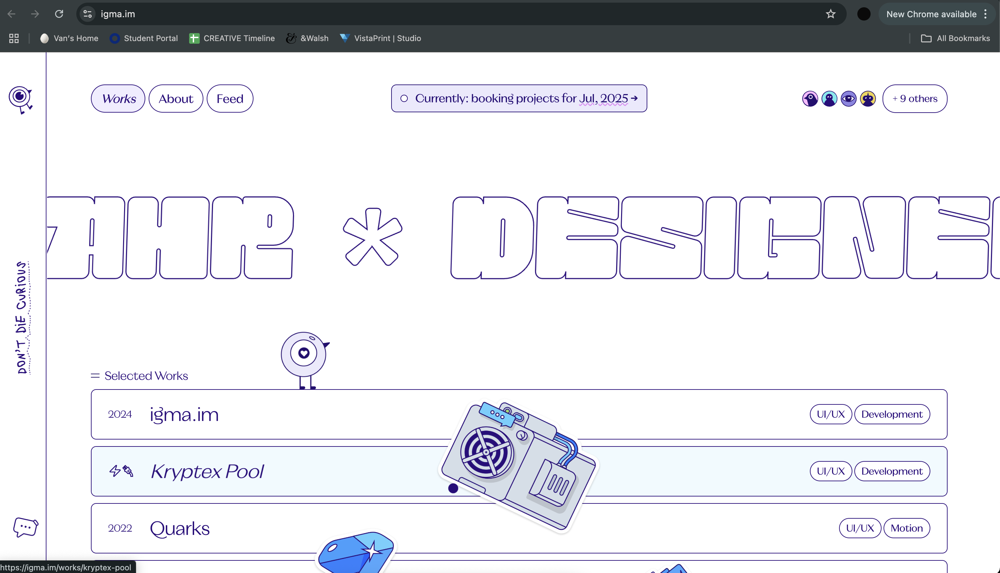

Click picture to open IGMAs
The IGMA website stands out as a sleek and refined digital space that inspires me through its minimalist
design and fluid interactivity. Its clean layout, muted color palette, and elegant typography create a
calm, sophisticated atmosphere that draws attention to content without overwhelming the viewer. The
subtle animations and seamless transitions enhance the user experience without distracting from functionality.
I’m inspired by how it merges simplicity with precision—every element feels intentional and well-crafted.
IGMA proves that minimalism doesn’t have to be boring; instead, it can elevate the message and create a sense
of clarity and professionalism that deeply resonates with me. I specifically really like the idea of them
incorporating cartoon elements to add a bit of playfulness into the website. One thing that stands out is the unique
cursor that changes shape based on movement.